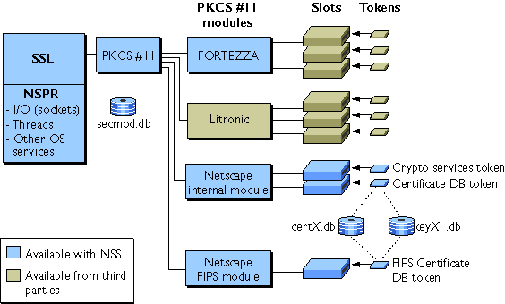

Figure 2.1 Relationships among NSS libraries, cryptographic modules, slots, and tokens

secmod.db to keep track of the modules available.
A PKCS #11 module always has one or more slots, which may be implemented as physical hardware slots in some form of physical reader (for example, for smart cards) or as conceptual slots in software. Each slot for a PKCS #11 module can in turn contain a token, which is the hardware or software device that actually provides cryptographic services and optionally stores certificates and keys.
Netscape provides three built-in modules with NSS and with server and client products:
certX.db and keyX.db, respectively, where X is a version number) that store certificates and keys.certX.db and keyX.db files. certX.db and keyX.db files and populate them with the appropriate certificates and keys.
If you are creating a client application, you can use either the Certificate Database Tool or the Communicator security interface to create the database files and populate them with the appropriate certificates and keys. You can use Communicator to set up client certificate databases by obtaining certificates from either a public CA or from a certificate server such as Netscape Certificate Management System. The instructions that follow assume you are using the Certificate Database Tool to set up both the server and client databases for testing purposes.
You can use the Security Module Database Tool, a command-line utility that comes with NSS, to manage PKCS #11 module information within secmod.db files. The Security Module Database Tool allows you to add and delete PKCS #11 modules, change passwords, set defaults, list module contents, enable or disable slots, enable or disable FIPS-140-1 compliance, and assign default providers for cryptographic operations.
server.c and client.c) that come with NSS, you must set up certificate, key, and security module databases for both the client and the server and populate them with valid CA, client SSL, and server SSL certificates. The following sections decribe how to the Certificate Database Tool to perform these tasks:
Setting Up the CA DB and CertificateWARNING: The instructions below illustrate the use of NSS command line tools to operate a simple root Certificate Authority for test purposes only. The CA, SSL server and SSL client certificates produced by these instructions work correctly for short term testing purposes. Although it is possible to use NSS command line tools to operate a proper CA, these instructions do not provide nearly enough understanding of the many considerations required to competently operate a CA. The NSS teams strongly recommends that users should not attempt to operate a CA for use in mission critical production business uses using NSS's command line tools, nor with the simple command line test tools that come with any package of cryptographic libraries. Many who have attempted it have eventually come to regret that decision. For production deployment, the NSS team strongly recommends that you either:For complete information about the command-line options used in the examples that follow, see Using the Certificate Database Tool.
- Use certificates from a competent third-party CA that is already known to your relying party software (e.g. your SSL clients), or
- Use professional grade CA software, such as Red Hat's Dogtag Certificate System, to set up and operate your own CA and issue your own certificates.
CA_db directory.>mkdir CA_db
>certutil -N -d CA_db >certutil -S -d CA_db -n "MyCo's Root CA" -s "CN=My CA,O=MyCo,ST=California,C=US" -t "CT,," -x -2
Enter Password or Pin for "Communicator Certificate DB": >certutil -L -d CA_db -n "MyCo's Root CA" -a -o CA_db/rootca.crt
Enter Password or Pin for "Communicator Certificate DB": >certutil -L -d CA_db "CTu,u,u" indicate that the certificate
is a CA certificate that is trusted to issue both client (C)
and server (T) SSL certificates. The u flag
indicates that the private key for the CA certificate is present in this set
of databases, so the CA can issue SSL client and server certificates with
these databases.
server_db directory.>mkdir server_db
>certutil -N -d server_db >certutil -A -d server_db -n "MyCo's Root CA" -t "TC,," -a -i CA_db/rootca.crt>certutil -R -d server_db -s "CN=myco.mcom.org,O=MyCo,ST=California,C=US" -a -o server_db/server.req
Enter Password or Pin for "Communicator Certificate DB": >certutil -C -d CA_db -c "MyCo's Root CA" -a -i server_db/server.req -o server_db/server.crt -2 -6
Enter Password or Pin for "Communicator Certificate DB": server_db directory with the appropriate nickname.
Notice that no trust is explicitly needed for this certificate.>certutil -A -d server_db -n myco.mcom.org -a -i server_db/server.crt -t ",," >certutil -L -d server_db "u,u,u" indicate that the server's
databases contain the private key for this certificate. This is necessary
for the SSL server to be able to do its job.
client_db directory.>mkdir client_db
>certutil -N -d client_db >certutil -A -d client_db -n "MyCo's Root CA" -t "TC,," -a -i CA_db/rootca.crt>certutil -R -d client_db -s "CN=Joe Client,O=MyCo,ST=California,C=US" -a -o client_db/client.req
Enter Password or Pin for "Communicator Certificate DB": >certutil -C -d CA_db -c "MyCo's Root CA" -a -i client_db/client.req -o client_db/client.crt -2 -6
Enter Password or Pin for "Communicator Certificate DB": client_db directory with the appropriate nickname.
Notice that no trust is required for this certificate.>certutil -A -d client_db -n "Joe Client" -a -i client_db/client.crt -t ",," >certutil -L -d client_db "u,u,u" indicate that the client's
databases contain the private key for this certificate. This is necessary
for the SSL client to be able to authenticate to the server.
>certutil -V -d server_db -u V -n myco.mcom.org
certutil: certificate is valid
>certutil -V -d client_db -u C -n "Joe Client"
certutil: certificate is valid
gmake to run the makefile. On Windows NT, use the nmake utility that comes with Visual C++.
If you create your own makefiles, be sure to include the libraries in the same order that they are listed in the sample makefiles. In addition, you must use the following compiler flags:
Solaris flags:
-c -O -KPIC -DSVR4 -DSYSV -D__svr4 -D__svr4__ -DSOLARIS -D_REENTRANT -DSOLARIS2_5 -D_SVID_GETTOD -DXP_UNIX -UDEBUG -DNDEBUG
-c -O2 -MD -W3 -nologo -D_X86_ -GT -DWINNT -DXP_PC -UDEBUG -U_DEBUG -DNDEBUG -DWIN32 -D_WINDOWS
Last Updated: 10/18/00 09:17:42